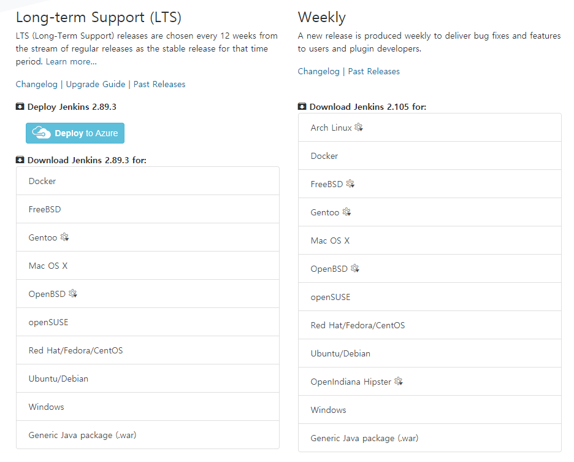

Jenkins 2.x 따라하기
https://jenkins.io/ 에서 다운받을수 있다.

일단 윈도우 기반에서 2가지 방식으로 진행 할 것인데
1. 윈도우 기반하고
2. Generic Java package 기반으로 진행할 것이다.
주의할 것은 2번 방식은 톰캣을 별도 설치해서 진행하는 방식인데 계정이나 읽기권한 문제등으로 빌드가 실패하는 경우가 있다. 세팅문제는 차후 연구과제로 남겨놓겠다.
1번 방식은
http://printhelloworld.tistory.com/111 을 참고로 글쓰기
2번 방식은
http://tomining.tistory.com/127
http://ict-nroo.tistory.com/32 등을 참고로 글쓰기